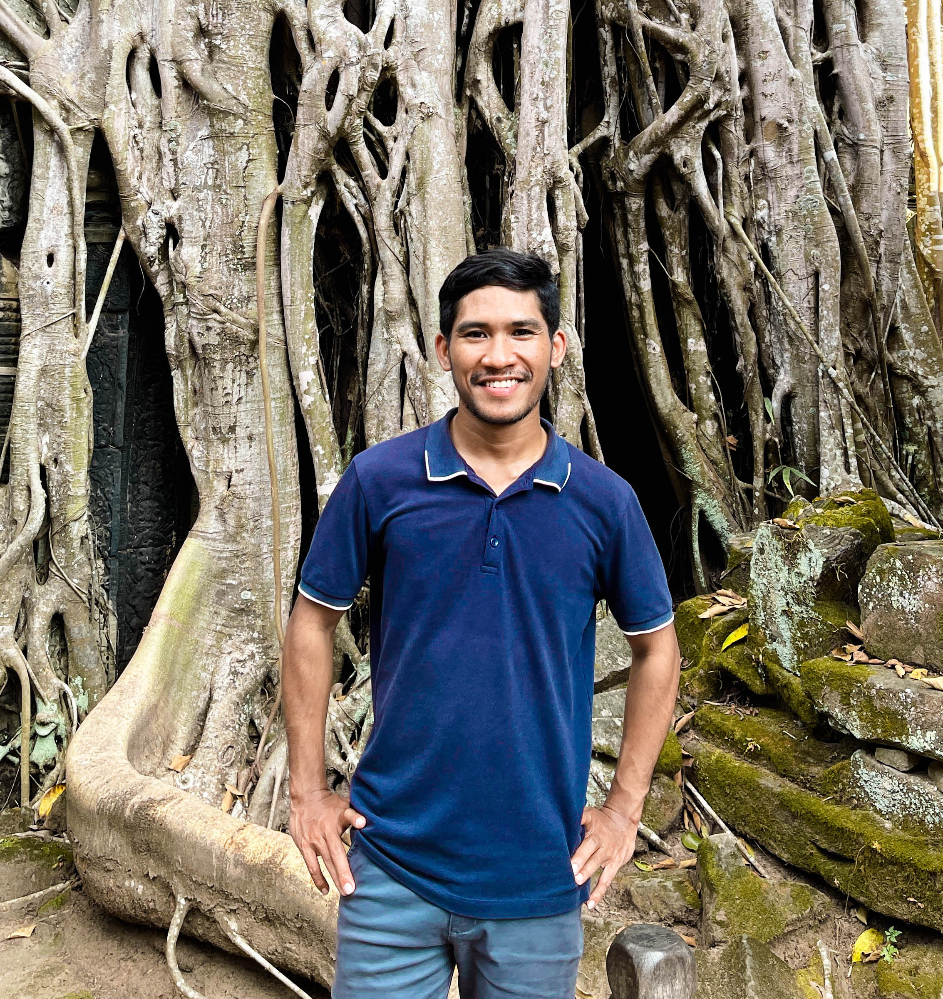

Bio.
Kosal Nith is a research associate at the Cambodia Development Resource Institute (CDRI) and coordinator of the East Asia working group of the Young Scholars Initiative. Before joining CDRI in July 2023, he held various positions at Future Forum (2020–2022), including Young Research Fellow, Junior Research Fellow, and Program Coordinator. In addition, he has worked as a field supervisor at WorldFish and interned and volunteered with the Youth Resource Development Program and Habitat for Humanity.
His research primarily focuses on macroeconomics, with contributions to topics such as economic growth and development, economic uncertainty and resilience, inflation, and income distribution. Kosal's research approach draws on post-Keynesian economics and other heterodox economic approaches, particularly their applications in policymaking contexts.
Kosal holds a double bachelor's degree in Economics from Lumière University Lyon 2 and the Royal University of Law and Economics, awarded in July 2019.
 01
01

02{kind=link}
 03
03
 04
04